NON-CLASSICAL:
This is the Tino's list of best non-classical music records. Since I don't have many non-classical records (and experience) take this list with even more precautions.
|
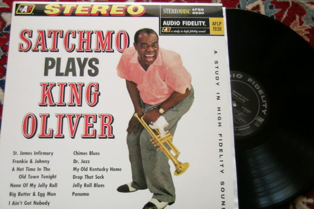 Audio Fidelity AFLP1930 (Classic Rec. reissue) Satchmo plays King Oliver Luis Armstrong Sound eng. ? This is a wonderful record. I like very much the initial “St. James Infirmary”, which is used so many times in Hi-Fi demoes. |
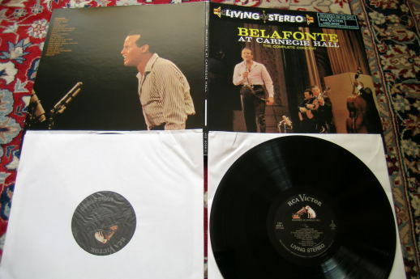 RCA LSO6006 (Classic Rec. reissue) Bellafonte at Carnegie Hall Harry Bellafonte Sound eng. B. Simpson Nothing to add about this spectacular double record. |
|---|---|
|
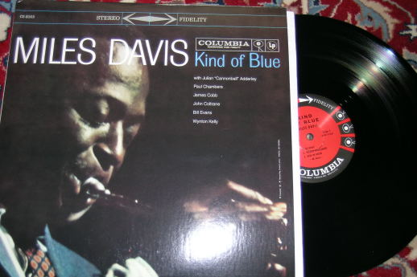 Columbia CS8163 (Classic Rec. reissue) Kind of Blue Miles Davies Sound eng. R. Van Gelder? I like only the “early” Davies, the one that he himself regretted. This is his most famous record. |
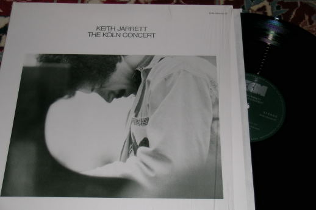 ECM 1064-5 Koln concert Keith Jarrett Sound eng. ? Another record from the history of modern music. Sorry if I'm not so much “original” but I like even very famous records. |
|
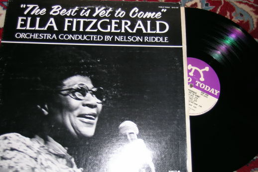 Pablo 2312-138 The best is yet to come Ella Fitzgerald Sound eng. A. Sides There are many good records of Ella, but we like very much this “old Ella” record, in particular for the “Somewhere in the night” song. |
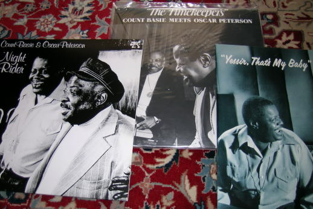 Pablo 2310-843, 2310-896, 2310-923 (Analogue Prod. Reissue) Night rider, The timekeepers, Yessir, that's my baby Count Basie, Oscar Peterson, L. Bellson, J. Heard Sound eng. V. Valentin, A. Balestier These 3 records where recorded in two nights (21 and 22 Feb. 1978). The feeling is fantastic and I like Count Basie more on this jazz small ensemble than in big Orchestra. When he touches the Hammond sweet come out! |
|
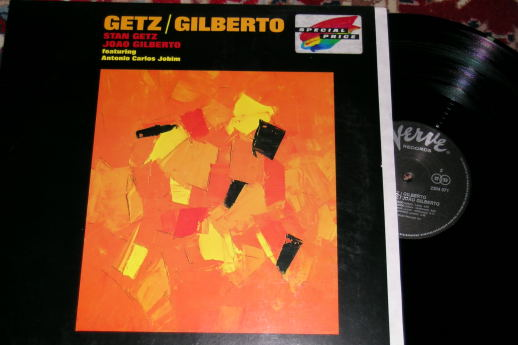 Verve 2304-071 Stan Getz and Joao Gilberto Sound eng. V. Valentin This is the birthday of Jazz - Bossa Nova. Very cool. |
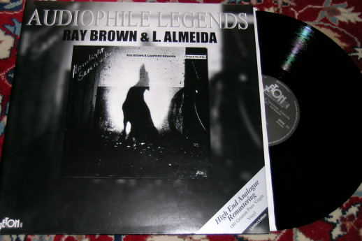 Jeton 33004 Ray Brown and Laurindo Almeida Sound eng. C. Albrecht The sound of this record is simply astonishing! |
|
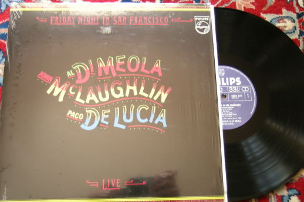 Philips 6302137 Friday Night in San Francisco Al Di Meola, John Mc Laughlin and Paco De Lucia Sound eng. T. Pinch Another very famous “live” performance. |
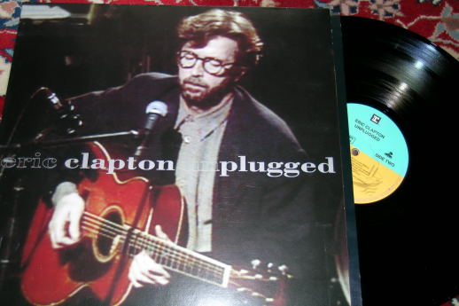 Reprise 9362-45024-1 Unplagged Eric Clapton Sound eng. J. Barton OK, may be it sound a little “digital”, but it is still a great sound! |
|
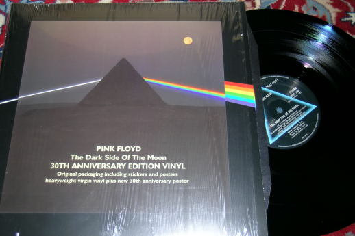 EMI-Pink Floyd SHVL804 The dark side of the Moon Pink Floyd Sound eng. A. Parsons Don't you know already everything about it? |
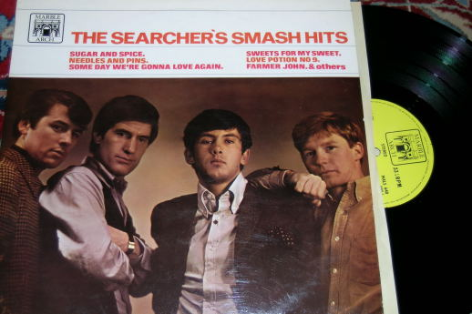 Marble Arch MALS640 The Searcher's smash hits The Searcher's Sound eng. ? Do you know the Beatles? So let me understand why you don't know the Searcher's? They were *better*, believe me or not. Credits to my wife for this big discover... |
|
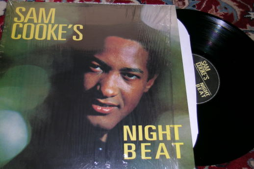 Abkco 1124-1 Night Beat Sam Cooke Sound eng. D. Hassinger Sam is the most loved singer of my wife, both for his gospel side (when he was still a boy he became leader of the already famous Soul Stirrers) as for his “devils” pop side. This Abkco is probably his more “audiophile” record, but also the RCA productions are quite good. Another tragic life becoming part of the music history. After Sam's life a change was going come not only in music world but also in black people civil rights. |
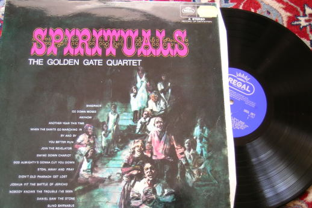 Regal SREG2071 (MONO) Spirituals The Golden Gate Quartet Sound eng. ? Yes, I'm also a fan of the GGQ. I have take this record just as an example, but there are many which sound even better. |
|
Updated June 2007 |
To be continued? |
Tino © August 2007